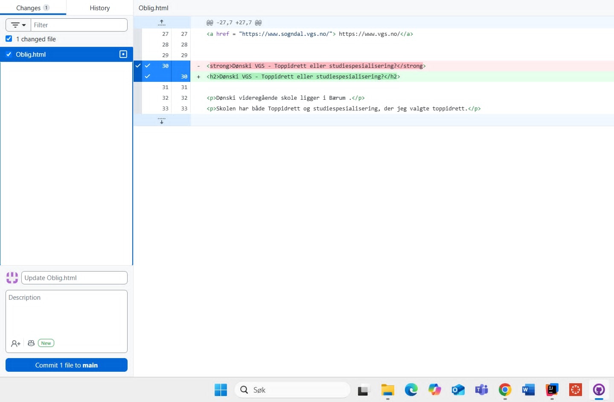
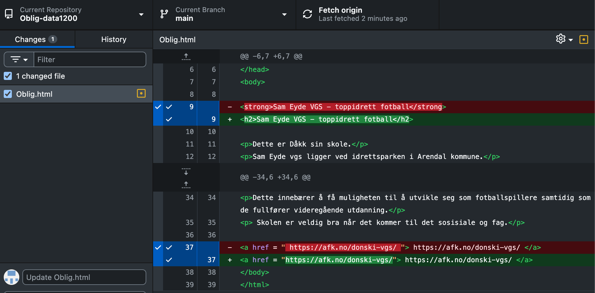
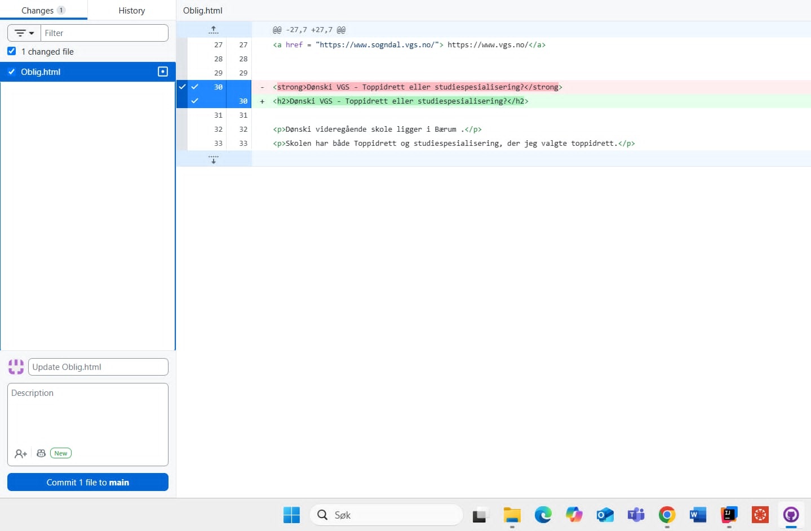
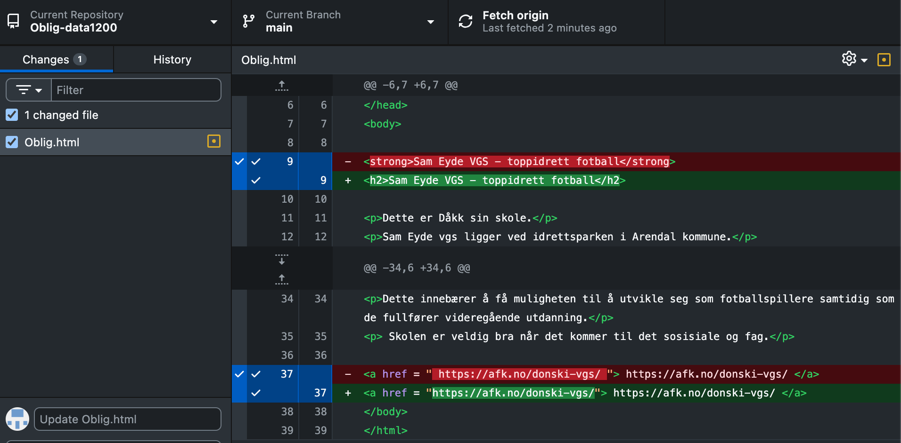

Dette er Dåkk sin skole.
Sam Eyde vgs ligger ved idrettsparken i Arendal kommune. Dette er en ganske stor skole på ca 2000 elever. Toppidretten er ett veldig profesjonelt lokale med gode tilbud. Det jeg likte med toppidretten er timeplanen. Du får med deg alle generelle faga som gir deg ett greit fagbrev samtidig som du får mye aktivitet i timeplanen. https://sameyde.vgs.no/Dette er Magnus sin skole.
Sogndal VGS ligger i Sogndal Sentrum. Dette er den eneste vidregåendeskolen i Sogndal.
Skolen har litt over 1000 elever, og har yrkesfaglige og studiespsialisernde linjer. Idrettslinja har 2 rettninger, toppidrett og breddeidrett. Jeg gikk breddeidrett. Det er en helt fantastisk skole å gå på https://www.vgs.no/Dønski videregående skole ligger i Bærum .
Skolen har både Toppidrett og studiespesialisering, der jeg valgte toppidrett. Dette innebærer å få muligheten til å utvikle seg som fotballspillere samtidig som de fullfører videregående utdanning. Skolen er veldig bra når det kommer til det sosisiale. https://afk.no/donski-vgs/ 


